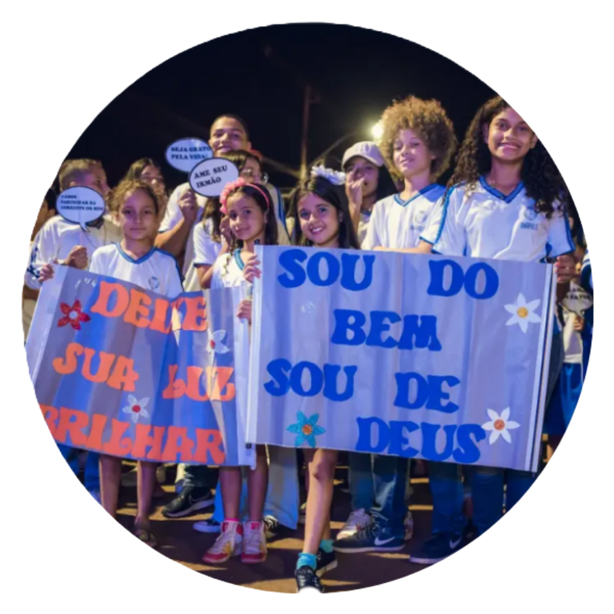
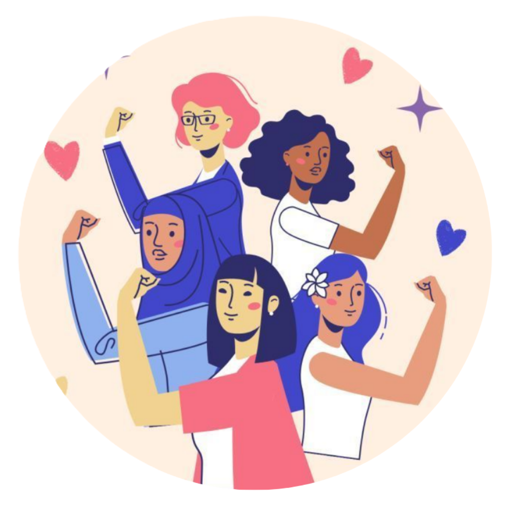
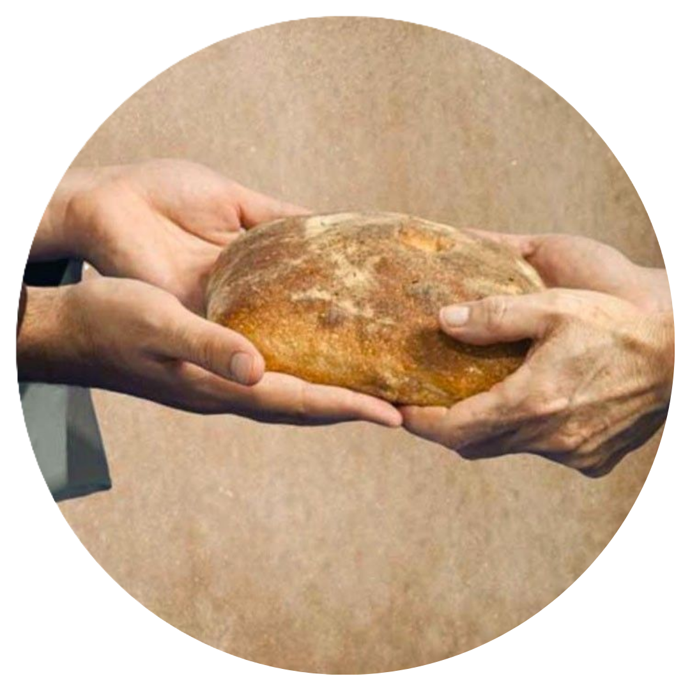
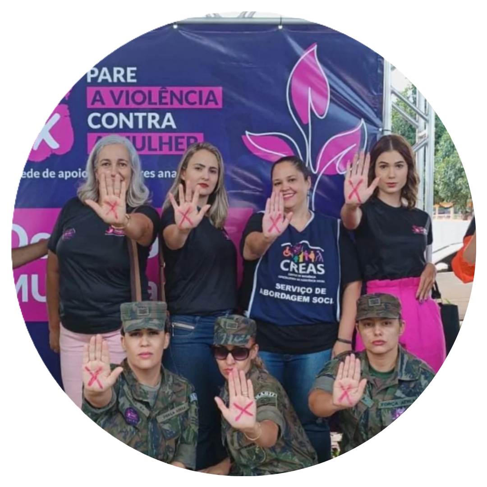
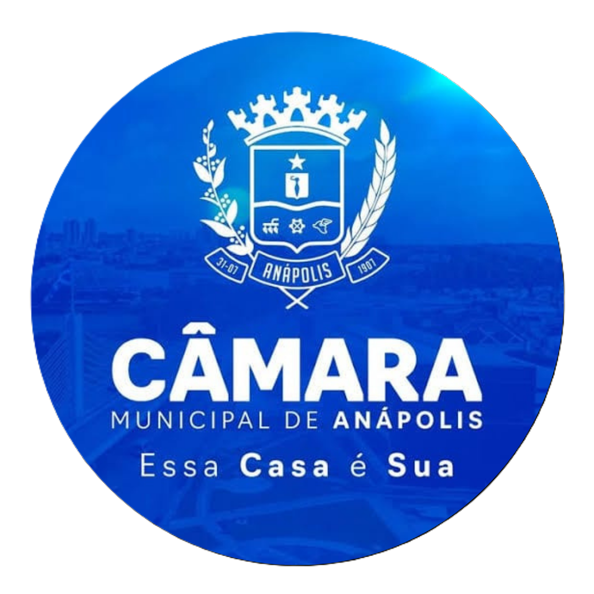
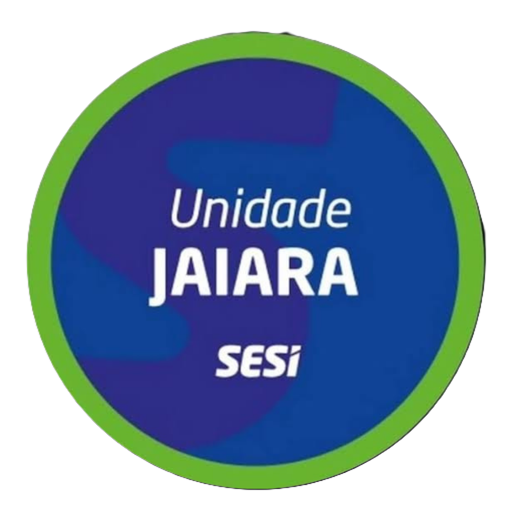
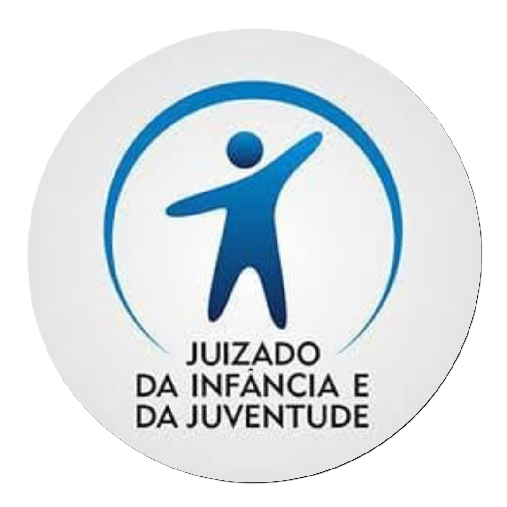

A Associação Cruzada Pela Dignidade é um movimento social que acredita na força do bem, da união e do
cuidado com as famílias.
Atuamos de forma voluntária, comprometida e organizada, levando ações que promovem dignidade,
proteção, educação e transformação social.
Nosso propósito é fortalecer pessoas e comunidades por meio de projetos que inspiram cidadania,
prevenção e acolhimento .
Sempre com ética, responsabilidade e respeito à vida.
Mais do que campanhas, somos um chamado constante para atitudes que constroem um mundo mais justo,
consciente e humano.
Onde chegamos, buscamos acender luz, gerar impacto e criar oportunidades para que cada pessoa viva
com mais Dignidade.
Se você acredita no poder do coletivo e deseja participar de um movimento que transforma realidades,
deixe seu coração falar mais alto.
"Eu Sou do Bem, Eu Sou de Deus" Ação que transforma.
Em 2014, a Associação Cruzada pela Dignidade lançou a campanha permanente
“Eu sou do Bem, eu sou de Deus” com a missão de inspirar a prática de boas ações e
fortalecer princípios, virtudes e valores essenciais para a convivência em sociedade.
A iniciativa busca mostrar que o bem está presente na maioria das pessoas e que cada atitude
positiva tem o poder de transformar vidas, fortalecer comunidades e construir um futuro melhor. Por
meio da união, da solidariedade e do resgate dos valores familiares, a campanha incentiva a
construção de uma sociedade mais justa, digna e pacífica, na qual o respeito e o amor ao próximo
sejam protagonistas.
Para a secretária-geral adjunta, Dra. Janaina Macedo, o evento representa uma importante iniciativa
que “simboliza a luta pela paz e recuperação dos valores”, reforçando a importância de cultivar boas
atitudes e inspirar mudanças positivas na sociedade.

Caminhada Caminhada pela Paz nas Escolas: Ação que envolve escolas, famílias e respeito.
Promover a cultura de paz nas escolas por meio da mobilização de estudantes,
famílias, educadores e lideranças comunitárias e religiosas, incentivando a empatia, o respeito
às
diferenças, a prevenção da violência e a construção de ambientes escolares mais seguros, humanos
e
acolhedores.
temos o compromisso permanente de estimular as escolas participantes a desenvolver ações contínuas
de prevenção à violência,
valorização da vida e fortalecimento dos vínculos entre estudantes, educadores e familiares, para
que a caminhada seja o início de uma transformação duradoura.

Caminhada "Concurso Cruzada pela Dignidade: Juntas Somos Mais fortes"
O Concurso Cruzada pela Dignidade é uma iniciativa educativa e sociocultural que
busca incentivar crianças, adolescentes e jovens a refletirem sobre a importância dos valores
humanos e seu papel na construção de uma sociedade mais justa, solidária e respeitosa.
Por meio de atividades artísticas, culturais, literárias e ações sociais, o projeto pretende
estimular a criatividade, o protagonismo juvenil e a prática de boas ações, promovendo princípios
como empatia, respeito, honestidade, responsabilidade e solidariedade.
A iniciativa propõe a participação de instituições de ensino, educadores, famílias e parceiros da
comunidade, reconhecendo e valorizando talentos e atitudes que contribuam para o bem coletivo.
Alinhado à campanha permanente “Eu sou do Bem, eu sou de Deus”, o concurso reforça o compromisso da
Associação Cruzada pela Dignidade com a formação cidadã, a valorização da vida e a disseminação de
valores essenciais para a convivência em sociedade.
Mais do que premiar talentos, o projeto busca reconhecer atitudes, despertar consciências e inspirar
novas gerações a fazerem a diferença onde vivem.
Cruzada pela Dignidade: o bem começa em cada um de nós e se multiplica quando compartilhado.

Caminhada "Ajude o Próximo"
Em 2024, a Cruzada pela Dignidade lançou a quarta vertente de sua campanha: “Ajude o Próximo”, com o
propósito de fortalecer a solidariedade e ampliar o alcance das ações em prol daqueles que mais
precisam.
Como parte dessa iniciativa, a Associação abraçou a causa da instituição Pão dos Pobres, de Porto
Alegre (RS), que atende aproximadamente 1.800 crianças e adolescentes em situação de vulnerabilidade
social. A ação busca mobilizar a sociedade para contribuir com essa causa e levar esperança,
dignidade e oportunidades a quem mais necessita.
A campanha integra as demais vertentes da Cruzada pela Dignidade e reforça, ao longo de 2024 e 2025,
o compromisso de promover o bem, incentivar a união e fortalecer valores essenciais para a
construção de uma sociedade mais justa, solidária e humana.
A Associação também expressa seu reconhecimento ao presidente de honra da Cruzada pela Dignidade,
cuja trajetória, ao longo dos anos, tem contribuído para semear valores e inspirar boas ações no
coração de Anápolis e de seus cidadãos. Como juiz da Infância e da Juventude, sua atuação tem sido
significativa na proteção e no cuidado de crianças e adolescentes do município.
Agora, essa missão se estende para além das fronteiras locais, levando apoio e esperança aos nossos
irmãos do Rio Grande do Sul. Afinal, ajudar o próximo é transformar a solidariedade em ação e fazer
do bem um compromisso de todos.

Pare a Violência contra a Mulher.
Conscientizar, proteger e mobilizar para transformar realidades.
O projeto “Pare a Violência contra a Mulher” é uma iniciativa de mobilização social que reúne
instituições públicas, organizações da sociedade civil e a comunidade no enfrentamento à violência
contra a mulher.
Por meio de campanhas educativas, ações de conscientização e atividades de mobilização comunitária,
o projeto busca promover o respeito, divulgar os mecanismos de denúncia e fortalecer a rede de
proteção e acolhimento às mulheres.
A Associação Cruzada pela Dignidade integra a iniciativa como apoiadora, contribuindo para a
realização de ações paralelas que ampliem o alcance da campanha e incentivem a participação da
sociedade nessa causa.
A mobilização também busca sensibilizar a população para a importância de reconhecer as diferentes
formas de violência, romper o silêncio e fortalecer uma cultura baseada na dignidade humana, na
igualdade e no respeito.
Combater a violência contra a mulher é um compromisso de todos. Juntos, podemos construir uma
sociedade mais segura, consciente e respeitosa.
Nossos Parceiros
ONG Amor ao Próximo Anápolis
Porque fazer o bem faz bem!

Câmara Municipal de Anápolis
Poder público e sociedade unidos pela família, pela cidadania e pela dignidade.

Sesi - Unidade Jaiara
Educação, união e dignidade: juntos pela força da família!

Juizado da Infância e Juventude de Anápolis
Uma sociedade unida, uma família fortalecida, um futuro com dignidade.
ONG Amor ao Próximo Anápolis
Porque fazer o bem faz bem!
Câmara Municipal de Anápolis
Poder público e sociedade unidos pela família, pela cidadania e pela dignidade.
Sesi - Unidade Jaiara
Educação, união e dignidade: juntos pela força da família!
Juizado da Infância e Juventude de Anápolis
Uma sociedade unida, uma família fortalecida, um futuro com dignidade.
ONG Amor ao Próximo Anápolis
Porque fazer o bem faz bem!
Câmara Municipal de Anápolis
Poder público e sociedade unidos pela família, pela cidadania e pela dignidade.
Sesi - Unidade Jaiara
Educação, união e dignidade: juntos pela força da família!
Juizado da Infância e Juventude de Anápolis
]
Uma sociedade unida, uma família fortalecida, um futuro com dignidade.
ONG Amor ao Próximo Anápolis
Porque fazer o bem faz bem!
Câmara Municipal de Anápolis
Poder público e sociedade unidos pela família, pela cidadania e pela dignidade.
Sesi - Unidade Jaiara
Educação, união e dignidade: juntos pela força da família!
Juizado da Infância e Juventude de Anápolis
]
Uma sociedade unida, uma família fortalecida, um futuro com dignidade.
JUNTOS FAZEMOS A DIFERENÇA
DOAÇÕES
Sua contribuição fortalece nossos projetos e ajuda a transformar vidas.
Escolha a forma que for mais prática para você e faça parte dessa corrente do bem.
✦
Doação via QR Code
QR Code de demonstração
Escaneie o QR Code com o aplicativo do seu banco ou utilize o Pix Copia e Cola.